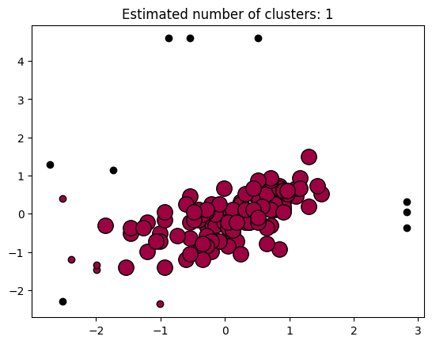

import numpy as np
import pandas as pd
import matplotlib.pyplot as plt
import seaborn as snsOutlier Detection by DBSCAN
Outlier Detection by DBSCAN
We learned that DBSCAN is a density based clustering method based on the connectivities of data points. By setting the epsilon and min_point, we cand detect the data points that are isolated by majority of data points.
Dependencies
Read data in
df = pd.read_csv('/work/Nov2Temp.csv')
df| high | low | |
|---|---|---|
| 0 | 58 | 25 |
| 1 | 26 | 11 |
| 2 | 53 | 24 |
| 3 | 60 | 37 |
| 4 | 67 | 42 |
| ... | ... | ... |
| 115 | 99 | 33 |
| 116 | 99 | 27 |
| 117 | 18 | 38 |
| 118 | 15 | 51 |
| 119 | 30 | 49 |
120 rows × 2 columns
Deal with missing values
df[df['high'] < -100]| high | low | |
|---|---|---|
| 72 | -998 | -998 |
| 79 | -998 | -998 |
df.drop([72, 79], inplace = True)
df| high | low | |
|---|---|---|
| 0 | 58 | 25 |
| 1 | 26 | 11 |
| 2 | 53 | 24 |
| 3 | 60 | 37 |
| 4 | 67 | 42 |
| ... | ... | ... |
| 115 | 99 | 33 |
| 116 | 99 | 27 |
| 117 | 18 | 38 |
| 118 | 15 | 51 |
| 119 | 30 | 49 |
118 rows × 2 columns
Conducting DBSCAN
from sklearn.cluster import DBSCAN
from sklearn import metrics
from sklearn.preprocessing import StandardScalerX = StandardScaler().fit_transform(df)
Xarray([[ 0.11564569, -0.50507808],
[-1.99391045, -1.46968963],
[-0.21397246, -0.57397891],
[ 0.24749295, 0.32173182],
[ 0.70895835, 0.66623594],
[ 0.90672924, 0.32173182],
[ 0.77488198, 0.59733512],
[ 0.77488198, 0.11502934],
[ 0.84080561, 0.73513677],
[ 0.04972206, 0.04612852],
[-0.41174334, -0.98738385],
[ 0.70895835, -0.29837561],
[-0.27989609, -0.29837561],
[-0.21397246, -0.22947478],
[ 1.10450013, 0.45953347],
[ 0.18156932, -0.02277231],
[-0.14804883, -0.29837561],
[ 0.11564569, -0.29837561],
[-1.53244504, -1.4007888 ],
[-0.21397246, -0.98738385],
[ 0.90672924, 0.11502934],
[ 1.5000419 , 0.52843429],
[ 0.37934021, -0.22947478],
[-0.01620157, -0.22947478],
[ 0.24749295, 0.25283099],
[-2.38945222, -1.19408633],
[-0.93913238, -1.4007888 ],
[-0.41174334, -0.16057396],
[-1.00505601, -0.50507808],
[ 0.84080561, -0.91848303],
[ 0.90672924, 0.18393017],
[-0.93913238, -0.16057396],
[-1.2028269 , -0.22947478],
[ 0.18156932, -0.71178055],
[-0.01620157, 0.66623594],
[-0.21397246, 0.11502934],
[-1.86206319, -0.29837561],
[-0.14804883, -0.02277231],
[ 0.70895835, 0.18393017],
[ 0.77488198, 0.25283099],
[-0.21397246, 0.25283099],
[-1.00505601, -2.36540035],
[-0.27989609, 0.04612852],
[ 1.30227101, 1.49304584],
[ 0.04972206, -0.8495822 ],
[-0.60951423, -1.19408633],
[-1.46652141, -0.50507808],
[-0.34581972, -0.02277231],
[ 0.44526383, 0.52843429],
[ 0.70895835, 0.11502934],
[ 0.24749295, -0.09167313],
[-0.27989609, -0.57397891],
[ 0.51118746, 0.45953347],
[ 0.64303472, -0.36727643],
[ 0.64303472, 0.52843429],
[ 1.10450013, 0.66623594],
[ 0.64303472, -0.78068138],
[-0.0821252 , -0.71178055],
[ 0.11564569, 0.11502934],
[-1.46652141, -0.36727643],
[-1.00505601, -0.71178055],
[-0.5435906 , 0.45953347],
[ 0.04972206, -0.36727643],
[-0.5435906 , -0.64287973],
[-0.60951423, 0.25283099],
[ 0.57711109, 0.18393017],
[-0.0821252 , 0.25283099],
[ 0.31341658, -0.22947478],
[ 0.97265287, 0.52843429],
[-0.21397246, -0.71178055],
[ 1.17042376, 0.94183924],
[ 0.31341658, 0.52843429],
[ 0.84080561, 0.66623594],
[ 0.11564569, -0.43617726],
[ 0.31341658, 0.04612852],
[-0.74136149, -0.57397891],
[ 0.70895835, 0.87293842],
[ 0.70895835, 0.94183924],
[ 0.04972206, -0.22947478],
[-2.52129948, -2.29649953],
[-0.5435906 , -0.22947478],
[-0.27989609, -0.8495822 ],
[-0.41174334, 0.11502934],
[-1.99391045, -1.33188798],
[ 0.37934021, -0.22947478],
[-0.27989609, 0.11502934],
[-0.93913238, 0.04612852],
[ 0.24749295, -1.05628468],
[-0.47766697, -0.16057396],
[ 0.31341658, 0.11502934],
[-1.2028269 , -0.98738385],
[-1.26875052, -0.36727643],
[-0.34581972, -1.19408633],
[ 1.43411827, 0.73513677],
[-0.34581972, -0.78068138],
[ 0.18156932, -0.22947478],
[ 1.17042376, 0.66623594],
[-0.47766697, 0.04612852],
[ 0.90672924, 0.04612852],
[-1.07097964, -0.71178055],
[ 0.51118746, 0.87293842],
[ 0.51118746, -0.22947478],
[ 0.90672924, 0.59733512],
[ 0.97265287, 0.59733512],
[ 0.44526383, 0.66623594],
[ 0.44526383, 0.11502934],
[ 0.51118746, -0.09167313],
[-0.5435906 , -1.05628468],
[ 1.30227101, 0.18393017],
[-0.5435906 , 4.59358296],
[-0.87320875, 4.59358296],
[ 0.51118746, 4.59358296],
[ 2.81851448, 0.32173182],
[ 2.81851448, 0.04612852],
[ 2.81851448, -0.36727643],
[-2.52129948, 0.39063264],
[-2.71907037, 1.28634337],
[-1.73021593, 1.14854172]])db = DBSCAN(eps = 1, min_samples=10).fit(X)
core_samples_mask = np.zeros_like(db.labels_, dtype=bool)
core_samples_mask[db.core_sample_indices_] = True
labels = db.labels_
# Number of clusters in labels, ignoring noise if present.
n_clusters_ = len(set(labels)) - (1 if -1 in labels else 0)
n_noise_ = list(labels).count(-1)
print("Estimated number of clusters: %d" % n_clusters_)
print("Estimated number of noise points: %d" % n_noise_)
# Plot result
import matplotlib.pyplot as plt
# Black removed and is used for noise instead.
unique_labels = set(labels)
colors = [plt.cm.Spectral(each) for each in np.linspace(0, 1, len(unique_labels))]
for k, col in zip(unique_labels, colors):
if k == -1:
# Black used for noise.
col = [0, 0, 0, 1]
class_member_mask = labels == k
xy = X[class_member_mask & core_samples_mask]
plt.plot(
xy[:, 0],
xy[:, 1],
"o",
markerfacecolor=tuple(col),
markeredgecolor="k",
markersize=14,
)
xy = X[class_member_mask & ~core_samples_mask]
plt.plot(
xy[:, 0],
xy[:, 1],
"o",
markerfacecolor=tuple(col),
markeredgecolor="k",
markersize=6,
)
plt.title("Estimated number of clusters: %d" % n_clusters_)
plt.show()Estimated number of clusters: 1
Estimated number of noise points: 9